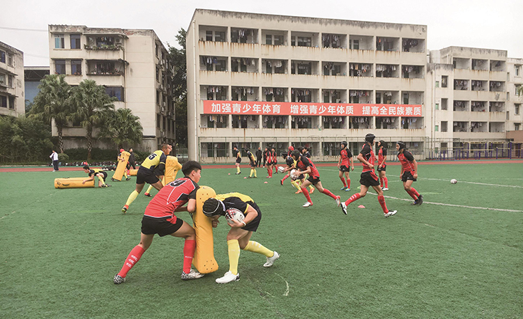

青神中学橄榄球队正在训练中（眉山市教体局供图）
去年，一场特殊的运动会，让眉山市的教职工深受触动。
2020年10月24日，眉山市举办了首届教师运动会。运动会为期4天，包含球类、田径、棋类等10个项目。全市3000多名教师在赛场上拼搏角逐、挥洒汗水，给他们的学生展现出与平时截然不同“另一面”。
“举办教师运动会传递了一种导向。”眉山市教体局局长廖仁军说，“如果教师都不爱运动，怎么能让学生爱运动？”
举办教师运动会是眉山市深化学校体育改革的一个缩影。近年来，眉山市坚持健康第一的教育理念，通过强保障、补短板、建机制、搭平台，着力推动青少年文化学习和体育锻炼协调发展，体育锻炼在师生中蔚然成风。
决不允许“侵占”体育课
眉山市第一小学体育教师李伟峰曾在多地任教，来到眉山后，“第一次找到了作为体育教师的‘自尊感’。”
最近，一个同事因外出学习，需要调整课时，“借”了李伟峰一节体育课。一周后，“借”的课时被按时归还。
“课程设置就像学生素质发展的‘营养配方’，各种元素缺一不可。”眉山一小校长徐长华说，要搞好学校体育，首先必须坚守和壮大课堂这个“主渠道”“主阵地”。
在眉山一小，没有“主科”和“副科”之分。学校规定，决不允许侵占体育课等艺体类课程，教师如果不按照课表上课，会受到处罚；与其他文化课程一样，体育课也有测试，也有家庭作业；开家长会时，体育老师必须到场和家长交流，向家长提交包含学科价值、课程安排、学生表现等内容的书面报告……
实现文化课与艺体课的“平权”，眉山一小是如何做到的？
“眉山市营造了良好的外部环境，学校科学发展的劲头更足了！”徐长华说，学校把破解“豆芽课”难题与校园文化建设和师德师风建设相结合，提出要“坚守学科自尊，反对学科歧视”“尊重你的同事，先尊重他的学科”。
如今，在眉山一小，在观念引领和制度约束下，没有人要求其他老师把课让给自己，也没有老师愿意把自己的课让给别人，因为老师们已经意识到，那是对别人和自己的不尊重。
徐长华讲了一个小故事：受疫情影响，今年学校的足球联赛推迟。一天，两个三年级学生敲开他的办公室，“校长，比赛什么时候开始啊，同学们都等不及了！”
“当学生发自内心想要运动，主动要求要运动，说明运动真正成了生活习惯，成了他们生命中的一部分。”徐长华说，小学只教学生6年，却要把目光投向他们未来的60年。
大课间真的“不简单”
去年，眉山市青神县实验小学在学生体质测试中，发现学生柔韧性和手臂力量两项指标不达标。
学校体育教研组马上展开了“攻关”。今年，在学校大课间活动的热身环节中，增加了由坐位体前屈改编的动作。
廖仁军说，锻炼不足是当前影响学生体质的最主要原因，也是学校体育改革的重难点。近年来，眉山在全市范围内推动实施“阳光体育运动”，要求学校要将学生体育锻炼实现课内课外、集体个体、兴趣技能全覆盖，实现规范化、有特色。
阳光大课间是保障学生日常运动量的重要渠道。为了让大课间活动发挥实效，青神县实验小学进行了“精细化”构建。
精细到什么程度呢？学校校长余冬梅说，在1个小时的活动中，既有热身运动，又有强化锻炼，强调循序渐进。不同年级段的学生活动内容不同，不同季节内容也有差异。“比如冬季会增加长跑，夏季活动时间会提前。”
眉山是大文豪苏东坡的故乡，去年，学校把校园文化建设和大课间活动结合起来，编制了别具一格的诗词操。音乐老师选曲编曲、语文老师选词配词、体育老师设计动作，不同学科教师的通力合作、密切配合，让校园体育运动有了更丰富的内涵、更深刻的教育意义。
与全国重点文物保护单位三苏祠一墙之隔的苏祠中学，学校挖掘东坡体育精神，提出“科学是体育之本，文化是体育之源、育人是体育之魂”，以体育为切入，打通五育“边界”，将推进校园体育改革变成了落实“五育并举”要求的抓手。
近年来，眉山市教体局通过完善评价监测机制，提升学校体育发展水平。该市将《国家学生体质健康标准》测试报告结果作为中小学生成长记录和综合素质评定的主要内容，加强体育课程考核，突出过程管理，逐步加大体育成绩在学生综合评价与考试中的权重。目前，眉山以60分的权重将体育考试成绩纳入中考总分，有效促进了学校体育工作开展。
小县城来了“国家队”
每天傍晚，青神中学的体育老师晏晓萍都会带着二十几名身着短袖短裤的高中生练习橄榄球。学生在操场激情奔跑，劲头十足，他们当中有许多人此前从未接触过橄榄球。
今年25岁的晏晓萍曾是国家女子橄榄球队员，在橄榄球界名气不小。2018年1月退役后，她放弃了80多万元的年薪，来到青神这个人口不到20万的小县，组建了四川省首支青少年橄榄球队。
一个边远的山区县缘何与橄榄球结缘？国家队运动员又是如何成为了高中体育教师？
近年来，眉山市要求学校按照“一校一品““一校多品”的模式，加强体育传统特色学校建设，给学生更丰富的体育“菜单”。在一次的偶然机会中，青神中学校长兰志祥了解到，橄榄球运动的核心价值理念是“正直、热诚、团结、纪律、尊重”。“这不是与我们的教育理念不谋而合吗？”兰志祥说。
当时，橄榄球运动在四川还比较小众，到哪里去找专业的橄榄球教师呢？兰志祥表达了要建一支学生橄榄球队的想法后，得到了市教体局支持。几经周折，兰志祥找到了晏晓萍，而晏晓萍到眉山考察后，被当地学校体育的浓厚氛围所感染，最终决定留下。
事实证明了晏晓萍的选择。近年来，眉山出台《关于加强学校体育工作的实施意见》，投入资金2.5亿元，全面改善学生体育教学、活动和训练场地。一个地区对体育的重视，让晏晓萍感到特别踏实，也充满干劲。不到两年时间，青神中学学生橄榄球队已经硕果累累，不仅摘得了全国金牌，还培养出32名国家一二级橄榄球运动员。
如今，眉山市“筑巢引凤”，通过多种方式补充体育专职教师228人，引进国家队运动员等高水平体育人才10余名，开发足球、篮球、橄榄球、田径、武术等基础和特色项目体育校本课程15个。
最近，眉山市洪雅县致远学校校长杨会平想建一间荣誉室，专门用于陈列学生在各级体育赛事中获得的奖项。“三年来，学生在篮球、足球等赛事中获得的奖杯、奖状、奖牌太多了，办公室里已经放不下了！”
杨会平说，之所以有那么多荣誉，是因为在眉山，学生锻炼、交流、竞技、展示的平台和机会很多。“我们学校绝大多数都是农村学生，发展好学校体育，让他们有了和大城市孩子同样的学习机会，有了更多的成才选择。”